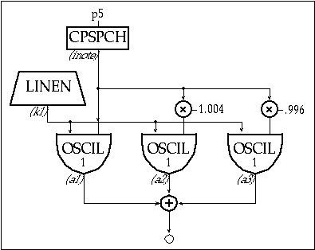

Next we'll animate the basic sound by mixing it with two slightly de-tuned copies of itself. We'll employ Csound's cpspch value converter which will allow us to specify the pitches by octave and pitch-class rather than by frequency, and we'll use the ampdb converter to specify loudness in dB rather than linearly.
Since we are adding the outputs of three oscillators, each with the same amplitude envelope, we'll scale the amplitude before we mix them. Both iscale and inote are arbitrary names to make the design a bit easier to read. Each is an i-rate variable, evaluated when the instrument is initialized.
instr 4
; toot4.orc
iamp
=
ampdb(p4)
; convert decibels to linear amp
iscale
=
iamp * .333
; scale the amp at initialization
inote
=
cpspch(p5)
; convert "octave.pitch" to cps
k1
linen
iscale, p6, p3, p7
; p4=amp
a3
oscil
k1, inote*.996, 1
; p5=freq
a2
oscil
k1, inote*1.004, 1
; p6=attack time
a1
oscil
k1, inote, 1
; p7=release time
a1
=
a1 + a2 + a3
out
a1
endin
f1
0
4096
10
1
; sine wave
;instr
start
duration
amp(p4)
freq(p5)
attack(p6)
release(p7)
i4
0
1
75
8.04
.1
.7
i4
1
1
70
8.02
.07
.6
i4
2
1
75
8.00
.05
.5
i4
3
1
70
8.02
.05
.4
i4
4
1
85
8.04
.1
.5
i4
5
1
80
8.04
.05
.5
i4
6
2
90
8.04
.03
1
e

Toot 4: multiple oscils with value converters